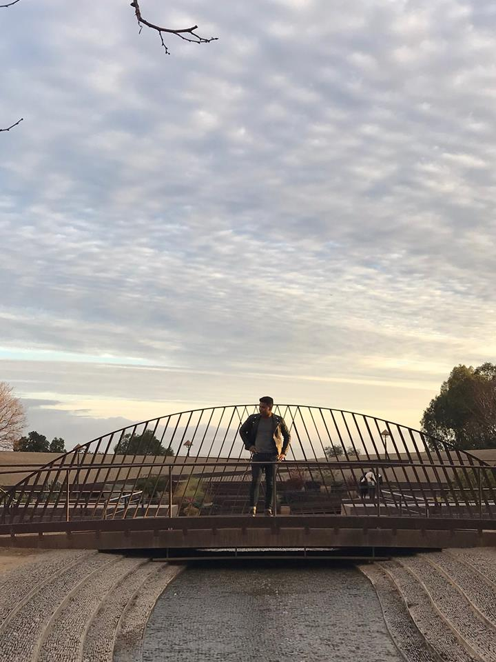

Djourn G.A. Gordon-Taylor Soyer

Throughout my life, I have always been fascinated with both puzzles and emerging technologies. Thus, it was only natural for me to develop a profound interest in software development. Throughout my studies within Hunter College and due to my own resourcefulness, I am well versed in a plethora of mark-up, front-end and back-end languages ranging from HTML & CSS to object-oriented languages like Java and C++, and everything in between. My work experience has given me the opportunity to collaborate with a variety of people and cultures in a range of fields from media companies to Michelin Starred restaurants. These situations have helped me form uniquely developed perspectives that provide me with an understanding of how various pieces come together to form a solution. Thanks to these perspectives and my passion for technology I have a wide variety of knowledge and applicable skills that will surely bring innovative ideas to the table.